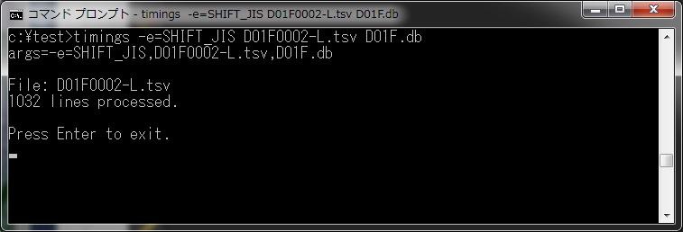
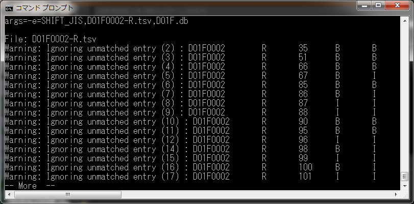

コーパスに時間情報を埋め込む
ここではChaKiの拡張機能として、時間情報（発話データに含まれる、語単位での開始時刻・終了時刻・継続時間）を管理する機能について 説明します。
まず、Mecab/Cabocha形式から通常のコーパスを作成します。この段階ではまだ時間情報は含まれていません。 （時間情報は、Wordテーブルが持っており、カラムとしては、いずれもdouble値のstart_time, end_time, duration の3つが用意されています。 通常のコーパスにおいては、これらのカラムはnullになっており、検索等に影響はありません。）
次に、作成したコーパスに対して、語レベルで1:1に対応している時間情報のTSV(Tab Separated Values)ファイルを用意します。 このTSVファイルは、現在下記の形式にのみ対応しています。
コーパスに出現する語と同一順で１行１語に対応し、各行はTabで分割された複数のカラムから成っているものとします。
| カラム1 | 表層形（表層が埋め込み先コーパスの表層と一致しない場合、処理を中断します。） |
| カラム2 | 語の発話開始時刻 start_time |
| カラム3 | 語の発話終了時刻 end_time（継続時間durationは、duration=end_time - start_time で計算します。） |
このファイルを、ChaKiのインストールフォルダに存在する "Timings.exe" コマンドに入力することにより、コーパスに時間情報を埋め込みます。 Timingsは、コマンドラインから実行するツールで、使用法は以下の通りです。
Usage: Timings [Options] <InputFile> <Output> Options (default): [-e=<encoding>] Input Encoding (SHIFT_JIS) [-C] Do not pause on exit (false) InputFile - TSV File Output - .db file for SQLite / .def file for Others
以下に実行例を示します。

コーパスに含まれる語とTSVの語を順に照合する過程で、表層の不一致が検知された場合、下のようなエラーが表示されます。

"... unmatched entry " の次の括弧内はTSVファイルの行番号、その右は行の内容を示しています。 不一致がある行は無視され、コーパス内の現在の語に一致するものが見つかるまでTSVの行を先に進めます。 間違ったファイルを指定したときなどは、ほぼすべての行で不一致エラーとなりますので、適宜Ctrl-Cを押して処理を中止してください。